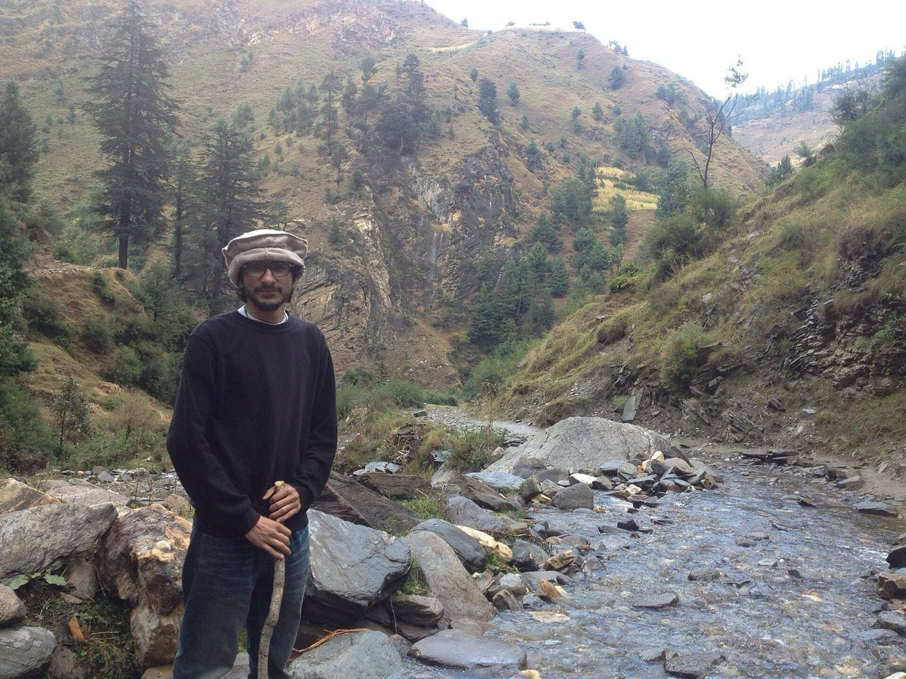

Far from a number to dial
- The operator’s kit is three plasters. A zip-line landing goes wrong and a wrist bends where it shouldn’t. The guide is nineteen and looking at you — splint it from what the group is carrying.
- No shared language, one patient. A fellow traveler is down at the viewpoint and your phrasebook doesn’t cover this. Assessment needs no vocabulary: look, feel, count, compare.
- The insurance card doesn’t fly. Heat exhaustion on an “easy” island hike, and the policy in your pocket reimburses — it doesn’t rescue. Somebody still has to run the first hour, and the local number isn’t 911.
The pre-departure five
Read these five between booking and boarding:
- Patient Assessment — a system that works in any country, in any language
- Heat Illness — vacations cluster in hot places; the spectrum doesn’t care that you’re off duty
- Musculoskeletal Injuries — scooters, stairs, and trail ankles — the traveler’s injury tax
- Evacuation — learn the local emergency number before you need it, and what to say when it answers
- Kits & Preparation — the kit that flies with you, because the operator’s kit is a hope
Then pressure-test it
Interactive scenarios — one decision at a time, tempting mistakes included, debrief at the end:
- Cool First — altered means cool now, wherever you are
- Wiggle, Feel, Warm — a splint from daypack contents
- Two Go, One Stays — getting help when you can’t just dial
The certification question, honestly. “Wilderness First Aid” isn’t a regulated credential. No government body defines what a WFA card means — it means whatever the company that printed it says it means. What counts in front of a patient is whether you can do the work. This course teaches the work, free, and issues a record of completion — not a certificate, and we won’t pretend otherwise. If your itinerary includes diving or serious altitude, those carry their own medicine and their own courses — neither is taught here, and a travel clinic visit before you fly is worth more than any kit. If an operator requires a provider’s card, take their class. If nobody requires you to hold a card, what you need are the skills, not the laminate.
What this is
Fifteen lessons, a 40-question knowledge check, sixteen practice scenarios, a printable field reference card, and a kit checklist. Free, no account, nothing recorded about you, source on GitHub. It teaches decision-making, not hands-on skill — practice the hands-on parts on a real, padded, complaining friend.
Other long-haul people: humanitarian & disaster relief volunteers in off-grid areas · jungle & tropical trekkers · desert & canyon-country explorers